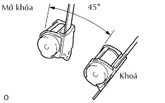

CỤM ĐAI AN TOÀN NGOÀI GHẾ SAU > KIỂM TRA |
| 1. KIỂM TRA CỤM ĐAI GHẾ SAU NO.1 NGOÀI PHẢI |
|  |
Khi độ nghiêng của bộ cuốn là 15° hay nhỏ hơn, kiểm tra rằng đai an toàn không thể kéo ra khỏi bộ cuốn. Khi độ nghiêng của bộ cuốn là hơn 45°, kiểm tra rằng đai an toàn bị khóa.
Nếu hoạt động không như tiêu chuẩn, thay đai.
| 2. KIỂM TRA CỤM ĐAI NGOÀI GHẾ SAU NO.2 NGOÀI PHẢI |
Khi độ nghiêng của bộ cuốn là 15° hay nhỏ hơn, kiểm tra rằng đai an toàn không thể kéo ra khỏi bộ cuốn. Khi độ nghiêng của bộ cuốn là hơn 45°, kiểm tra rằng đai an toàn bị khóa.
Nếu hoạt động không như tiêu chuẩn, thay đai.